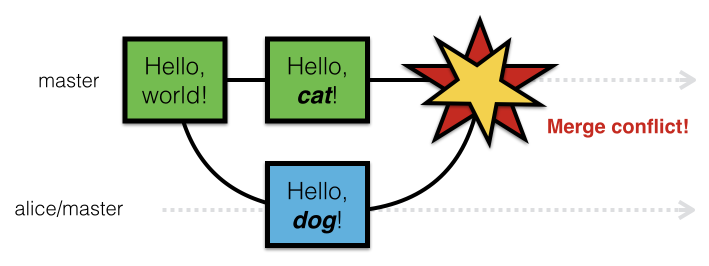

Welcome to Git!
A lot of people use Git without understanding how it works internally, forming a roadblock to learning advanced usage.

Hopefully this talk will help alleviate the above problem.
What is a version control system?
A version control system (VCS) is basically a system for recording and managing the history of changes made within a project.
Uses of version control
An amazing backup system (you can roll back changes and recover from accidental deletions)
We can bring back that paragraph we accidentally deleted last week.
Faster recovery from errors and thereby cheaper experimentation (you can recover previous state by using simple commands instead of manually reproducing or removing your changes)
We can try out an experimental structure and simply discard it if we don’t like it.
Promotes transparency and facilitates reproducibility (you can see how a project developed and who made which changes)
Louis introduced that typo into the article a few versions ago.
Easier collaboration (you can manage and merge isolated changes more easily)
We'll just merge your changes to the concluding sections with our edits to the introduction.
This is much easier and more robust than manually handling versioned copies of files.
What is a repository?
A repository is - simply put - the history of an entire project. It contains all tracked files and the history of their revisions.
Version control systems manage project histories through repositories.
Version control systems like Git capture snapshots of your work through time.
What is Git?
Git is known as a DVCS (Distributed Version Control System) specifically designed to help manage distributed projects.

Git was originally written and released in 2005 by Linus Torvalds - the initial creator of Linux - specifically to help manage Linux kernel development.
Popular version control systems that work on a centralized client-server model such as CVS (Concurrent Versions System) and its successor SVN (Subversion) require all repository actions to be run through a centralized server.
This forces contributors to connect to a central server to commit changes, making it more difficult to track work on a project independently.


In simplistic terms, a hash is a string generated by a hash function that is (theoretically) unique for each specific given input.
Mathematically speaking, hash functions should be injective (i.e. one-to-one). This means that using the exact same input should generate the exact same output hash.
What are hashes used for in Git?
Hashes serve as integrity checksums to detect whether the data has been corrupted or modified, as well as unique identifiers for all its internal objects.
Git uses the SHA-1 hashing algorithm to generate hashes.
The terms "hash" and "checksum" are often colloquially interchangable.
Strictly speaking, checksum is the term for values used to verify data integrity -- this isn't necessarily true of hashes.
Using hashes as checksums have the added benefit of being reasonably good unique identifiers.
Git Objects
We will be looking at three object types in Git:
How does Git track changes internally?
Each commit is a version of your project at a particular point in time.

This is what computer scientists like to call a linked list!

What actually happens during a commit?


Let's initialize a repository!
But, wait! Before we do, let's go over a little about Git's workflow.

What's being added is not the file itself, it is a snapshot of the content you want represented in that file.
This a subtle point that becomes more apparent when you think of adding partial file changes instead of the entire changeset for a file.
Think more like a director or photographer.
Oops. I don't actually want that change.
Crap! I made a mistake and committed the wrong thing!
As long as you haven't pushed your changes publicly, it should be okay to clean up the history.
Even if your changes are public, depending on your context, it may be okay to modify public history.
- A branch is an independent history (or chain) of commits.
- Branches allow your project to take on multiple parallel lines of development independent of each other.
- Thinking about phylogenetic trees ("trees of life") is a good visual metaphor.
Internally, a branch is simply a reference.
What is a reference in Git?
(Since the question has been asked, you can assume it's a distinct thing.)
A reference is simply a "pointer" (yes, it's a technical term) to a specific commit.
References typically represent the head (i.e. latest) commit of a particular branch and are advanced forward when new commits are made.
Question: When should I branch?

Answer: Any time you're about to do anything that you might even remotely want to reverse or isolate.

Reconciling branched work: Merging vs. rebasing
Scenario: We branched to try something out, and it looks good. Now we want to include those changes back into the main line of development.
What happens if you try to merge the same area of content that's been edited in different ways?
A merge conflict appears!
Dealing with merge conflicts can initially seem difficult and stressful when they appear, but if you keep practicing at it, it becomes second nature.

The technical details of resolving merge conflicts are best handled elsewhere, as it can occupy a short workshop by itself.
Check out https://github.com/learn-co-curriculum/git-merge-conflicts for more information.
When there's a merge conflict, it requires the person reconciling the conflicting content to make editorial decisions as to what should actually be committed to the project history.
It really is as primitive as that.
Decentralized remote repositories are a big part of why Git has been such a powerful tool.
Once you get used to the idea that Git repositories are independent entities that, in essence, must discuss amongst each other constantly in order to maintain consensus, it becomes a little easier to understand its distributed nature.

Forking is a more abstract idea made into a sort of formal idiom by Github.
Within GitHub, when you fork a project, it essentially means you're cloning that project's repository to your account on GitHub's servers.
Forking is cloning, albeit between GitHub's servers instead of between your machine and others.
How do we receive work recorded in a remote repository?
To `git pull` it all together:
GitHub Remote Workflows
Why do this?
I can be assured that any default push, intentional or accidental, will not directly impact the main project.
Thank you!